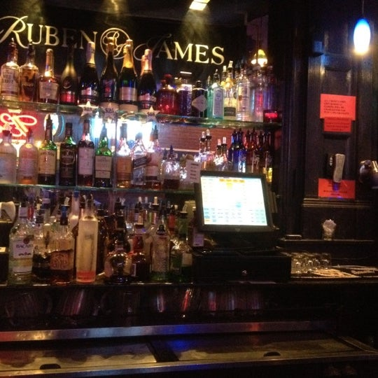
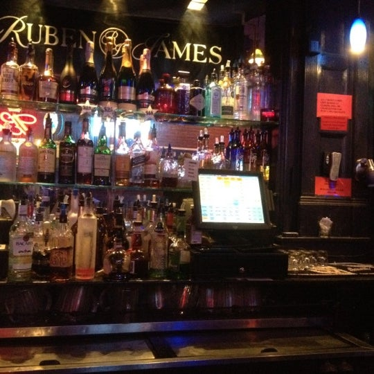
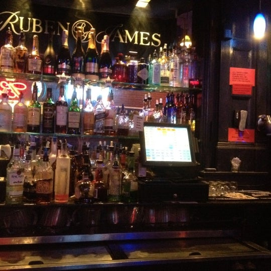
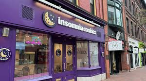
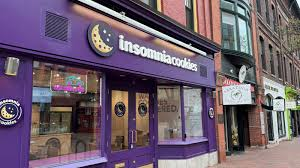

Rueben James
Rueben James in a sports bar on Main street. They have many tvs to watch sports games and free pool. They serve food during happy hour, and the bar closes at 2am.
Akes in decribed as a "Rock and Roll Sports Bar" located in the middle of Chruch Street that has been open since 1990.
A bar "hidden" on College Street, right off of Church, that resembles a tavern. This is a cash only bar and most of the drinks are just $5!
Serving food during the day and a fun scene for dancing during the night, located on Church Street.

Rueben James in a sports bar on Main street. They have many tvs to watch sports games and free pool. They serve food during happy hour, and the bar closes at 2am.
Foam is an independent small brewry right by the waterfront. They have many events inlcuding live music and vintage markets out in the parking lots.
Zero Gravity is a larger brewey with a large menu of food as well. There is plenty of outdoor and indoor seating, and pools tables.
Four Quarters is located in the center of Winooski, the town next Burlington. It's best known for its IPA's and sours.

 

Late night cookie shop that is open until 1am, located in the middle of Church Street.
A seasonal icecream stand near the downtown area. This small window will create a huge line down South Union Street in the summer time.
A great place to grab a slice of pizza, watch tv, and play a game of pool.